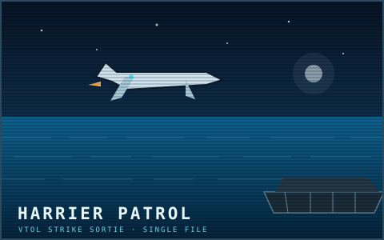
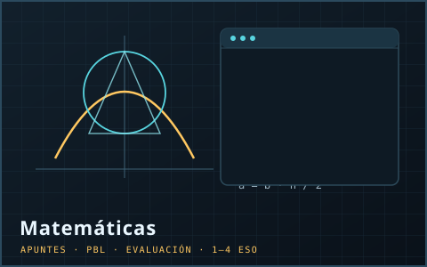
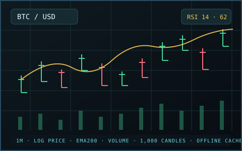
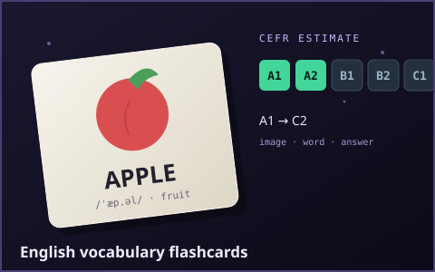
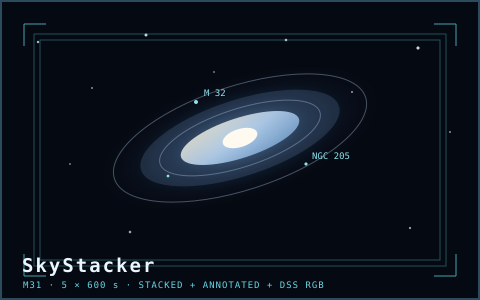
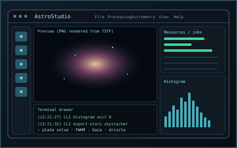
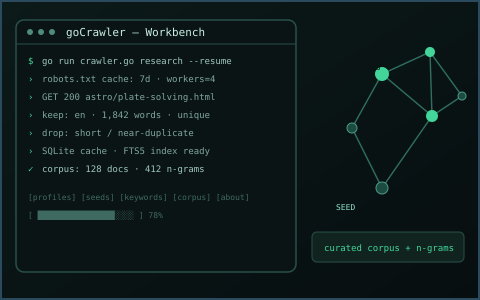

computerphysicslab
Theoretical physicist, science communicator, teacher and open-source developer. Live demos and public code.
Play and explore
-

Harrier PatrolPLAY A self-contained VTOL arcade game: one HTML file, no install, works offline. -

Mathematics teaching notes Secondary-school Mathematics materials, activities and PBL resources (in Spanish). -

Crypto Charts Multi-provider chart viewer with cached windows, RSI and two-asset comparison. -

English vocabulary flashcards Image-based word quiz with a CEFR level estimate from A1 to C2.
Code on GitHub
-

SkyStacker Fast Go CLI for astronomical image stacking and processing. -

AstroStudio GTK desktop front-end for astronomical and photographic CLI backends. -

goCrawler Topic-restricted crawler that builds curated text corpora with a local SQLite cache.